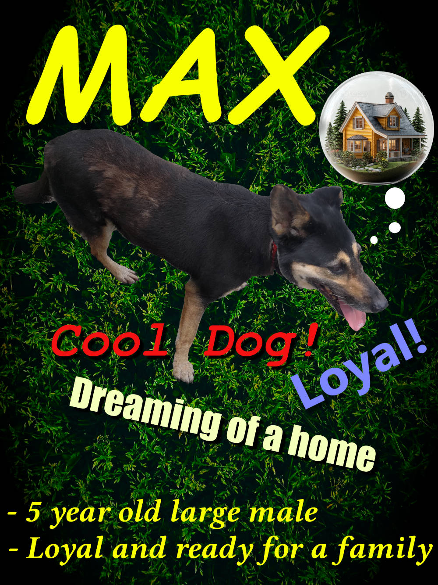

My Dog: Puddles

Information
Name: Puddles
Sex: Male
Age: Around 8 years old
Appearance: All black except white mouth part
Personality: Calm, quiet, gentlemanly
Likes: Smelling and walking around plants and flowers
Size: Medium
Biography
Today, I'll be introducing you to Puddles. Although he is a dog, he is a very well-mannered gentleman. He has black fur that gets an iridescent shine when under the sun. He also has a white mouth area, making it look like he’s wearing a suit. He not only dresses like a gentleman, he also acts gentlemanly. The way he walks is very composed. Other dogs might be running from place to place, but Puddles always walks with a steady pace. If he wants to get to a place quicker, he will instead just walk faster.